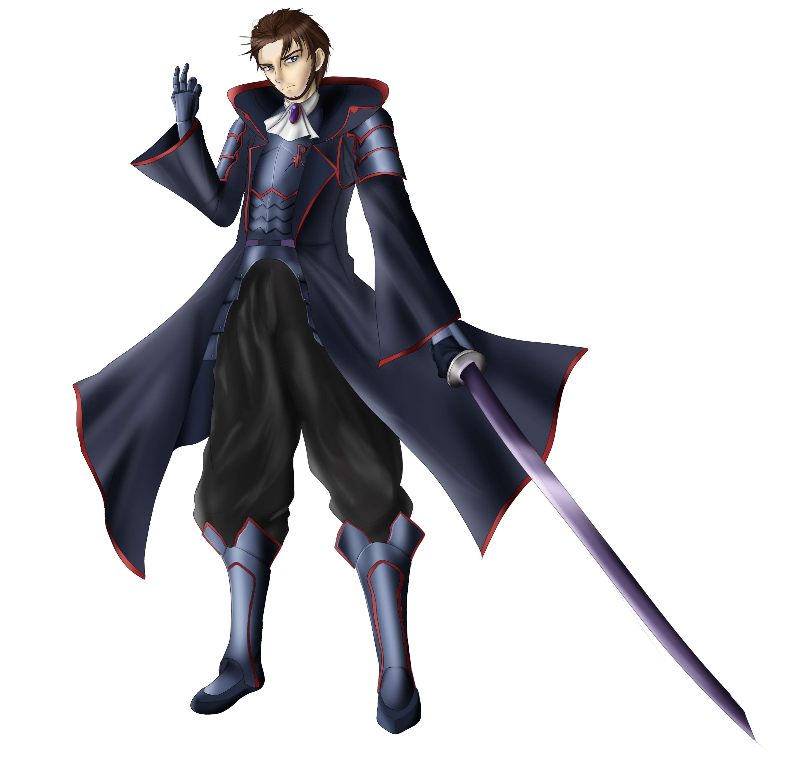

Présentation
Malgré une formation scientifique, j'ai, depuis l'école primaire, eu le nez plongé dans les livres. Au collège, je passais des après-midi entières à lire des saga que tout le monde connait, telles que Hunger Games, la guerre des clans ou Harry Potter. Cependant, le matraquage scolaire des cours de Français a fini par me dégoûter du plaisir de lire à mon entrée en quatrième
Cependant, un jour de mars 2013, alors que je me baladais sur des forum, lire des fanfictions m'a poussé à prendre, moi aussi, la plume et à tenter l'aventure avec une histoire qui deviendra par la suite "LADD: Le requiem d'amethyste". Depuis ce jour, Word est le logiciel que j'utilise le plus (à égalité avec photoshop, peut-être) et LADD est mon plus fidèle compagnon depuis plus de huit ans.
Même si je n'ai pas encore décroché de contrat d'édition (on croise les doigts !), je ne perds pas espoir de voir LADD un jour en librairie. En attendant, j'essaie d'aider les auteurs débutants à ne pas faire les mêmes erreurs que moi tout en cherchant à améliorer en permanence mon style.
